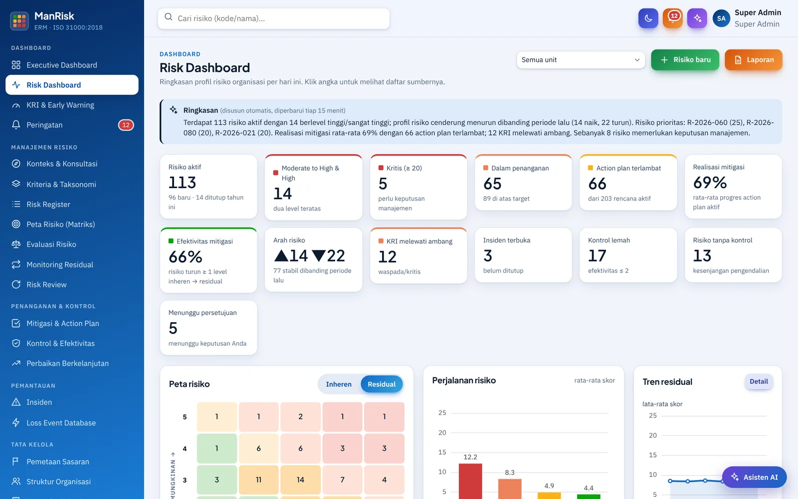
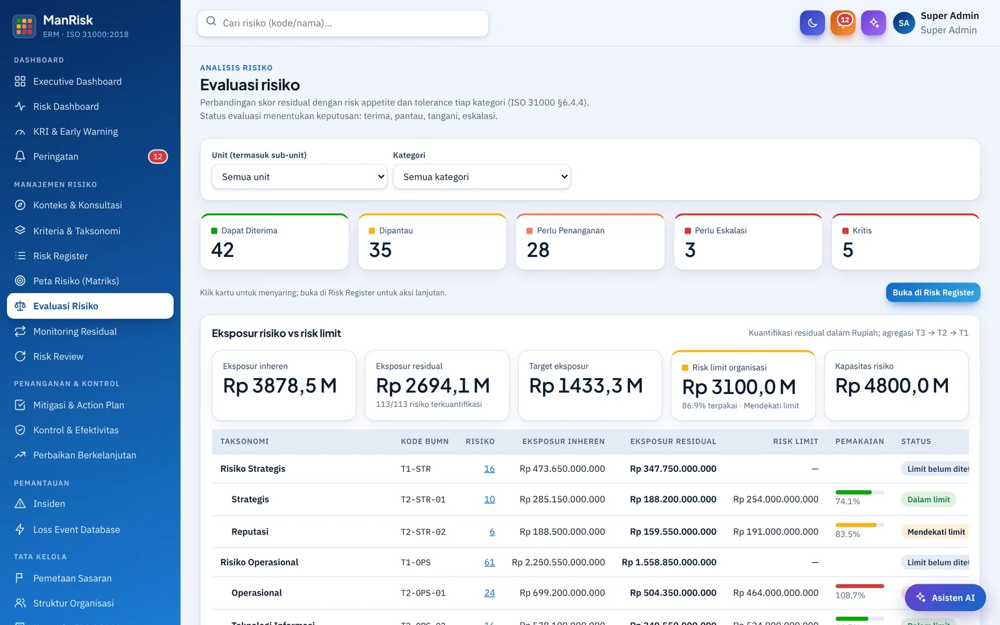

Tiga lini & organ pengelola
Direksi, Dewan Komisaris/Dewan Pengawas, Komite Audit, dan Komite Pemantau Risiko. Setiap peran pengguna dipetakan ke model tiga lini, dan Dewan Komisaris/Komite punya akses pemantauan sendiri.
Risk register, matriks & evaluasi, mitigasi, kontrol, KRI, insiden, review berkala, persetujuan berjenjang, dan pelaporan — dalam satu platform.

Pedoman Tata Kelola dan Kegiatan Korporasi Signifikan BUMN, berlaku sejak 24 Maret 2023 dan menggantikan PER-5/MBU/09/2022 tentang Penerapan Manajemen Risiko pada BUMN. ManRisk tidak hanya mengikuti proses ISO 31000, tetapi juga ketentuan manajemen risiko BUMN:
Direksi, Dewan Komisaris/Dewan Pengawas, Komite Audit, dan Komite Pemantau Risiko. Setiap peran pengguna dipetakan ke model tiga lini, dan Dewan Komisaris/Komite punya akses pemantauan sendiri.
Tema, kategori, dan kelompok peristiwa risiko, terintegrasi dari BUMN induk hingga anak perusahaan dengan kode Taksonomi Risiko Portofolio BUMN. Klasifikasi intensitas risiko: sistemik, signifikan, atau netral.
Low hingga High, eksposur dalam rupiah (inheren, residual, target), risk limit per kategori dan organisasi, kapasitas risiko, serta target residual per triwulan yang dibandingkan dengan realisasinya.
Laporan manajemen risiko triwulanan siap unduh, penilaian RMI tahunan dan independen pada lima dimensi, serta kajian risiko Kegiatan Korporasi Signifikan (investasi, aksi korporasi, proyek strategis) dengan dokumen PDF.

Banyak organisasi masih mencatat risiko di spreadsheet yang tersebar di tiap unit. Hasilnya, risiko besar luput dari pantauan sampai menjadi kerugian nyata.
Risk register tersebar di banyak file dengan versi berbeda. Tidak ada satu sumber kebenaran, sehingga profil risiko organisasi tidak pernah utuh.
Indikator risiko baru diperiksa saat rapat triwulan. Ketika ambang batas terlampaui, kerusakan sudah terjadi dan pilihan penanganan makin sempit.
Insiden dan kerugian tidak tercatat dalam loss database, sehingga akar masalah tidak dianalisis dan kejadian yang sama terus terulang.
Rencana mitigasi berhenti di atas kertas. Tidak ada yang tahu progres, siapa penanggung jawabnya, atau apakah tenggat sudah lewat.
Bukti persetujuan, riwayat perubahan, dan dokumen pendukung dikumpulkan manual. Bagi BUMN, ketentuan PER-2/MBU/03/2023 seperti taksonomi, risk limit, laporan triwulanan, dan RMI sulit dipenuhi tepat waktu.
Menyusun laporan risiko untuk direksi memakan waktu berhari-hari. Saat laporan siap, datanya sudah usang dan keputusan diambil tanpa gambaran terkini.
Dampaknya nyata: kerugian finansial, sanksi kepatuhan, terganggunya operasional, hingga hilangnya kepercayaan pemangku kepentingan. Manajemen risiko yang baik bukan sekadar kewajiban dokumen, melainkan perlindungan nilai organisasi.
| Aspek | Tanpa aplikasi (Excel/manual) | Dengan ManRisk ERM |
|---|---|---|
| Risk register | ✕File terpisah per unit, versi tidak sinkron | ✓Satu register terpusat dengan riwayat versi |
| Penilaian risiko | ✕Skor dihitung manual, kriteria berbeda-beda | ✓Skor otomatis dari kriteria berversi yang seragam |
| Peta risiko | ✕Digambar ulang setiap periode laporan | ✓Heat map 5×5 inheren, residual & target secara real-time |
| Peringatan dini | ✕Tidak ada; diketahui setelah kejadian | ✓KRI dengan ambang batas & notifikasi otomatis |
| Mitigasi | ✕Progres ditanyakan lewat email/chat | ✓Action plan, kanban, pengingat tenggat & verifikasi |
| Persetujuan | ✕Tanda tangan basah, tidak ada jejak | ✓Persetujuan berjenjang dengan SLA & jejak digital |
| Pelaporan | ✕Berhari-hari menyusun laporan direksi | ✓Laporan PDF/Excel dalam hitungan detik |
| Kuantifikasi | ✕Eksposur rupiah & risk limit dihitung terpisah | ✓Eksposur inheren/residual/target vs risk limit, otomatis per T1–T3 |
| Regulasi BUMN | ✕Laporan triwulanan, RMI, dan kajian KKS disusun manual | ✓Modul khusus PER-2/MBU/03/2023 siap pakai |
| Audit | ✕Bukti dicari manual, mudah hilang | ✓Audit trail permanen & dokumen bukti terpusat |
Dengan satu aplikasi, setiap lini organisasi bekerja dengan bahasa risiko yang sama, dan pimpinan mendapat gambaran yang akurat untuk mengambil keputusan.
Dashboard eksekutif menyajikan profil risiko terkini, tren, dan risiko di atas selera risiko (risk appetite) sehingga direksi bisa bertindak lebih awal.
Peringatan dini KRI dan loss event database membantu mencegah insiden berulang dan mengurangi dampak finansial dari risiko yang terealisasi.
Proses mengikuti ISO 31000:2018 dan Permen BUMN PER-2/MBU/03/2023, setiap perubahan tercatat di audit trail, dan bukti pendukung tersimpan rapi—mendukung GCG dan pemeriksaan auditor.
Skor risiko, peta risiko, dan laporan dibuat otomatis. Tim risiko fokus menganalisis, bukan menyalin data antar-spreadsheet.
Risk owner, risk officer, hingga manajemen berkolaborasi di satu platform dengan peran dan tanggung jawab yang jelas sesuai struktur organisasi.
Setiap rencana penanganan punya PIC, tenggat, progres, dan verifikasi penyelesaian—lengkap dengan proyeksi skor risiko setelah mitigasi.
ManRisk mengikuti proses manajemen risiko ISO 31000:2018 sehingga tim Anda cukup mengikuti langkah yang disediakan aplikasi.
Sasaran, proses, analisis SWOT, dan kriteria risiko berversi.
Wizard risk register, taksonomi, penyebab & dampak, deteksi duplikasi.
Skor kemungkinan × dampak, kontrol eksisting, level inheren.
Bandingkan dengan selera & toleransi risiko, tentukan prioritas.
Action plan mitigasi, PIC, tenggat, progres, dan verifikasi.
KRI, insiden, residual bulanan, risk review, laporan otomatis.
Lebih dari 30 modul yang saling terhubung: data yang diinput di satu modul langsung tercermin di dashboard, peringatan, dan laporan.
Antarmuka yang bersih dan mudah dipahami, dirancang untuk risk officer hingga jajaran direksi.
ManRisk ERM adalah aplikasi web manajemen risiko perusahaan (Enterprise Risk Management) yang mengikuti proses ISO 31000:2018: penetapan konteks, identifikasi, analisis, evaluasi, penanganan, pemantauan, dan pelaporan risiko dalam satu sistem terintegrasi.
Ya. Alur kerja, kriteria risiko, peta risiko 5×5, dan modul self-assessment kerangka kerja disusun berdasarkan prinsip, kerangka kerja, dan proses ISO 31000:2018.
Ya. Selain proses ISO 31000, ManRisk mengakomodasi ketentuan manajemen risiko dalam PER-2/MBU/03/2023 (yang menggantikan PER-5/MBU/09/2022): organ pengelola risiko tiga lini, taksonomi risiko T1–T3 dari BUMN induk hingga anak perusahaan, klasifikasi intensitas risiko sistemik/signifikan/netral, level risiko 5 tingkat dengan eksposur rupiah, risk limit, target residual per triwulan, laporan triwulanan, Risk Maturity Index, dan kajian risiko Kegiatan Korporasi Signifikan.
Modul RMI digunakan untuk menilai tingkat kematangan penerapan manajemen risiko pada lima dimensi, dengan penilaian internal setiap tahun dan penilaian independen paling sedikit sekali dalam tiga tahun. Hasilnya berupa indeks dan fase kematangan, dari Fase Awal hingga Praktik Terbaik.
BUMN dan anak perusahaan, perusahaan swasta, lembaga keuangan, rumah sakit, perguruan tinggi, dan instansi pemerintah yang perlu mengelola risiko secara terstruktur, terdokumentasi, dan siap diaudit.
Bisa. ManRisk menyediakan fitur impor dengan templat Excel dan pratinjau validasi sebelum data disimpan, sehingga risk register lama dapat dipindahkan dengan cepat.
ManRisk menerapkan hak akses per peran dan unit kerja, verifikasi dua langkah (MFA) via email, kebijakan sandi kuat, penguncian akun, audit trail yang tidak dapat diubah, unggahan berkas tervalidasi, dan pemisahan data antarorganisasi.
Hubungi tim Semesta Teknologi Utama melalui WhatsApp di 0812-8195-542 untuk demo, penawaran harga, dan opsi implementasi (cloud atau on-premise).
Konsultasikan kebutuhan Anda dan jadwalkan demo gratis bersama tim Semesta Teknologi Utama.
WhatsApp: 0812-8195-542 · DrOsmond